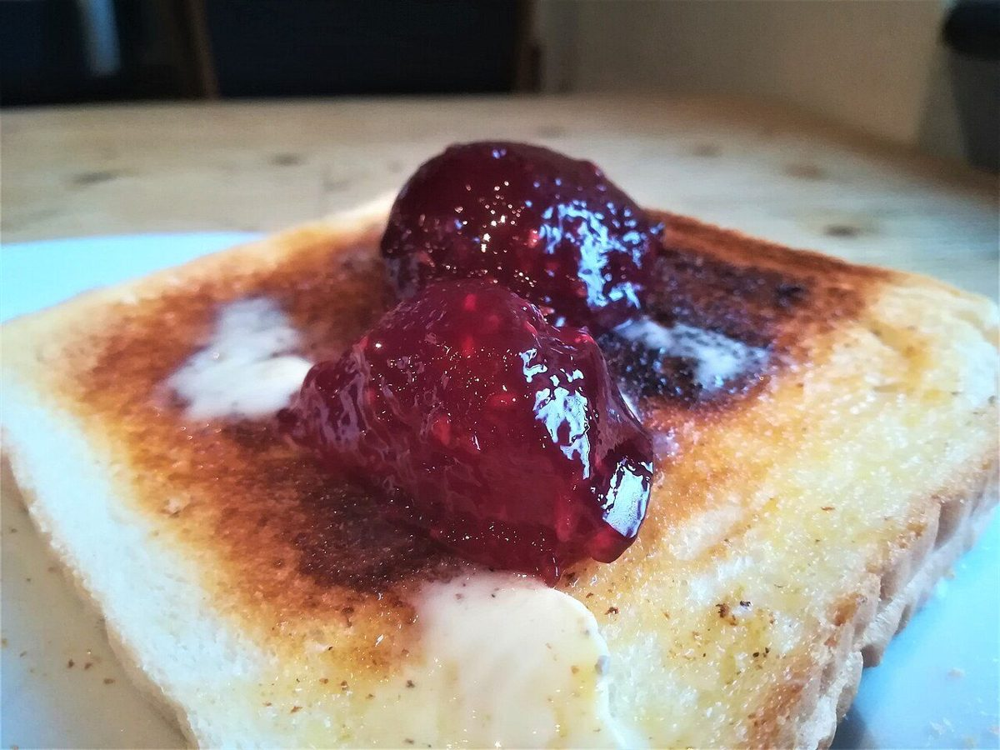

メニュー
メニュー
メニューと価格は準備中です。下の写真はすべてフリー素材のイメージで、実際の商品ではありません。
雨上がりの棚
写真だけ先に並べました
お店が出す商品の名前・内容・価格は、確認できるまで書きません。ここにあるのは、ベーグル・カフェの雰囲気に合いそうな国外・撮影地不明のイメージです。

丸いパン(国外のイメージ) イメージ:パン(商品名は準備中)
準備中

スライスしたパン(撮影地不明のイメージ) イメージ:パン(商品名は準備中)
準備中

レーズン入りのパン(撮影地不明のイメージ) イメージ:パン(商品名は準備中)
準備中

ジャムトースト(国外のイメージ) イメージ:トースト(提供の有無は準備中)
準備中

ラテ(国外のイメージ) イメージ:ドリンク(提供内容は準備中)
準備中

コーヒー(撮影地不明のイメージ) イメージ:コーヒー(提供内容は準備中)
準備中

小麦粉(撮影地不明のイメージ) イメージ:材料(使用の有無は準備中)
準備中